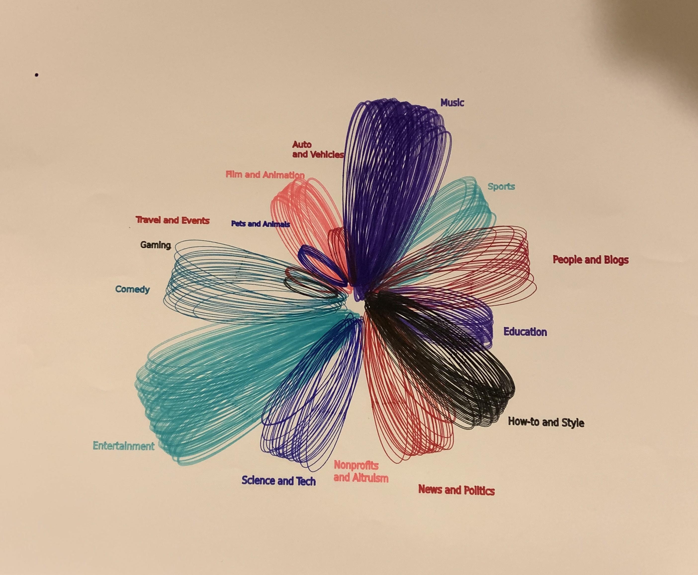
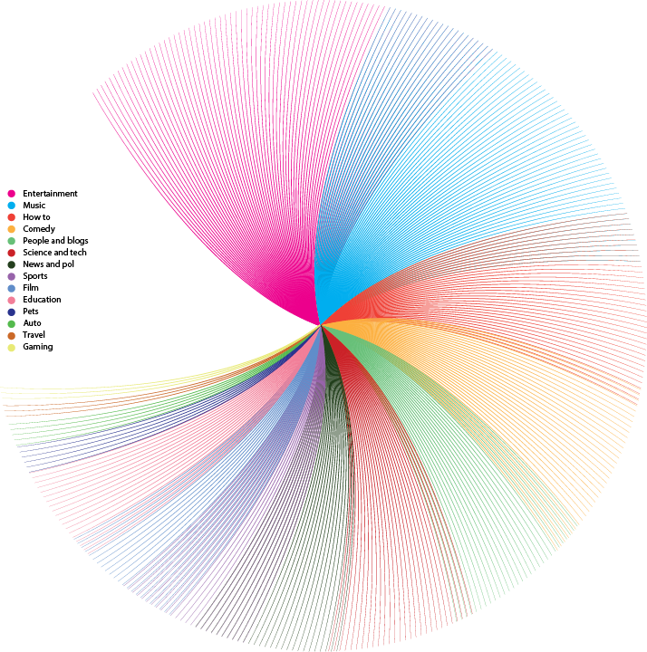
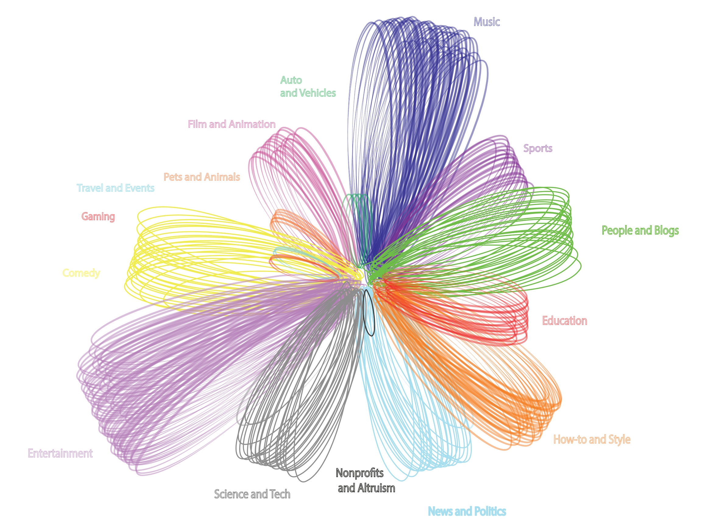
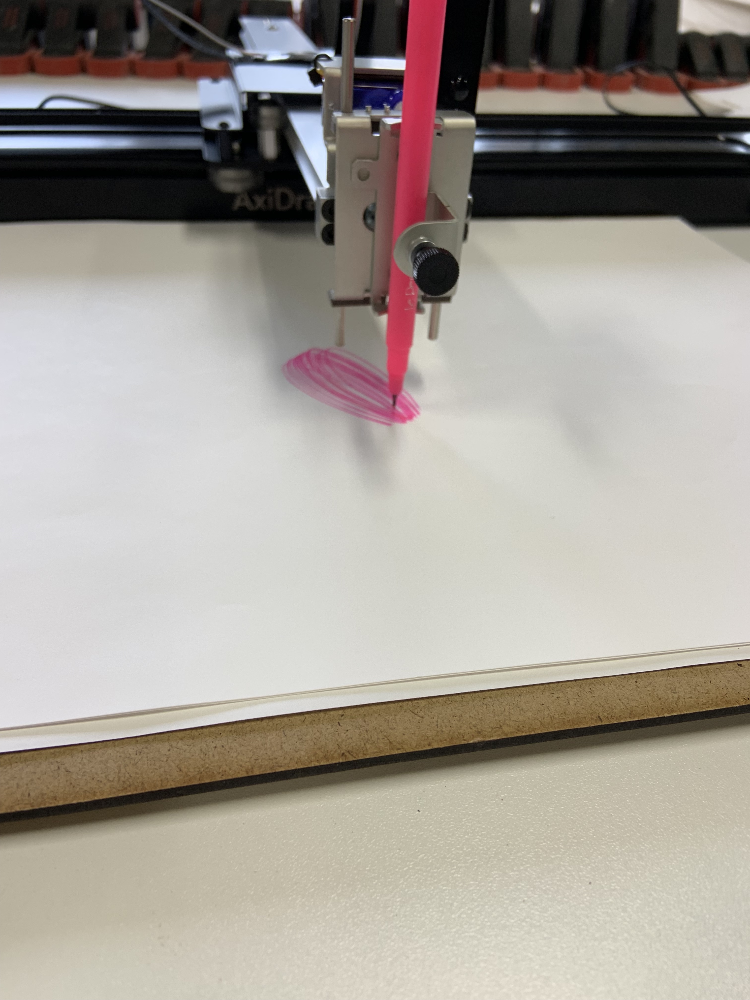
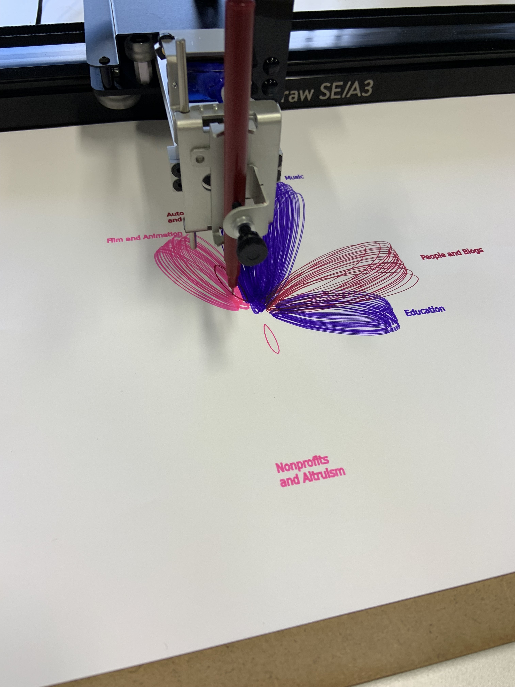
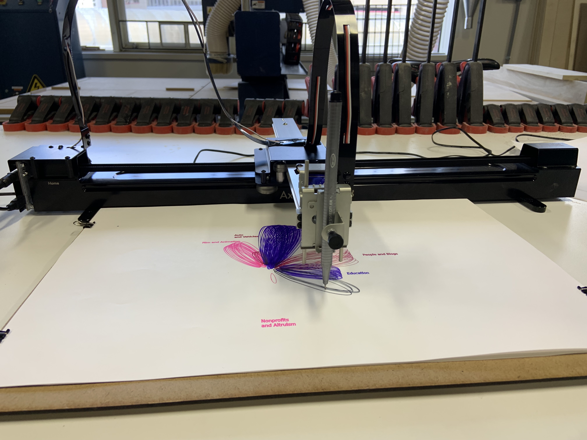
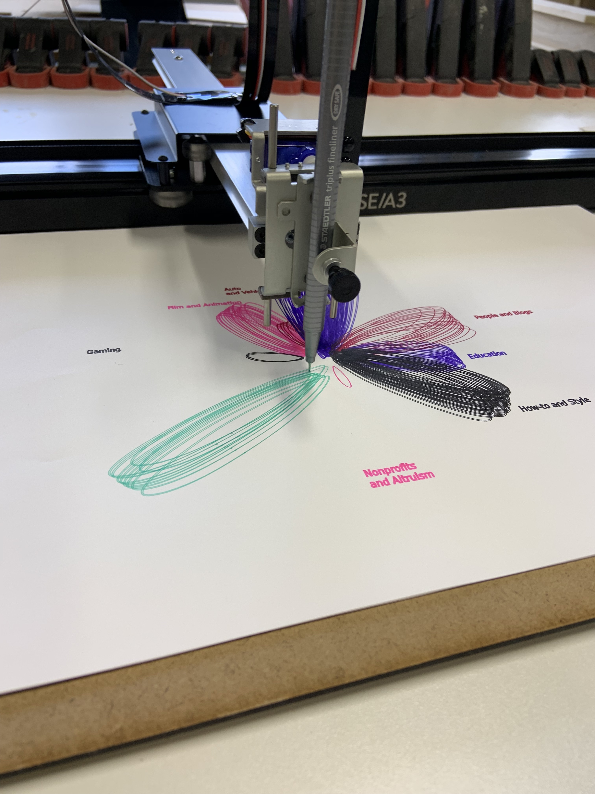
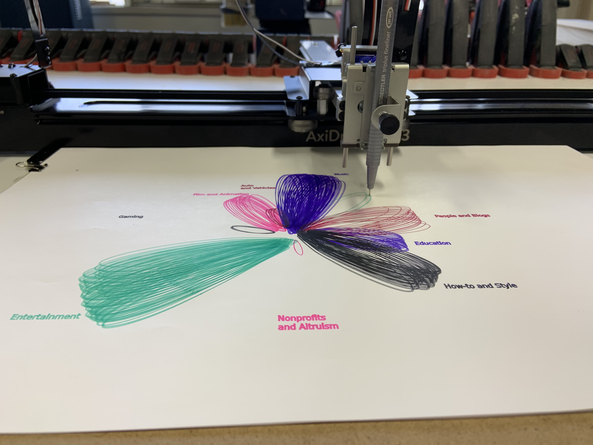

Project 4: Visualizing YouTube Video Trends
Group Members: Britney Chen, Logan Evans, and David Freedman

The final product of our data visualization.
For this project, we were instructed to gather data about interactions that took place on the internet. We then had to visualize this data in a way that could be drawn by an AxiDraw machine. We ultimately chose to focus on the data of different categories of videos that were on the trending page on Youtube.
We originally had the idea to visualize how humans have interacted with turtle migrations, but that yielded little information on the internet on how we have changed the migrations, or if we have changed their migration patterns. More specifically, We wanted to target how we as humans had affected the turtles through global warming but with global warming being a gradual process, finding both interesting and informative data proved to be difficult. We then found information that was more readily available to us: YouTube trending videos along with their categories.
Online, we found a spreadsheet with many months worth of data regarding trending videos during 2017. We selected a time range of November 14 - 30th 2017. This time slot yielded 3,400
videos of 14 different categories. We intially came up with two designs that represented this data visually

One of our initial designs.
This design was created by David. Regarding his thought process behind the design, he says:
"For the Spiral art piece, I wanted it to be colorful and simple, while still being portraying each trend. I also decided to have each arc / line be worth 10 views, amounting to the total number of views each trending category had. I wanted the art to have motion in it, which is why i chose to do arcs spiraling around a center point. I started with the largest amount of views in a trend and worked down to the trend with the smallest amount of views."

Our second design; we ultimately chose to use this one.
This design ... INSERT BRITNEY'S TEXT





Images of the AxiDraw producing our data visualization.
To produce the visualization using the AxiDraw, we had to convert the Illustrator file to an SVG file that contained the different color circle groups as different layers. We needed each color to be a different layer so that we could draw each portion individually, switching the pen colors between each layer. We used 8 different pen colors as that is what we had available to us. The file took a while to correctly format but once all the layers had been properly set and the dimensions were adjusted, we were able to start drawing. The process took about 2 hours including setup but resulted in our data visualization coming to life